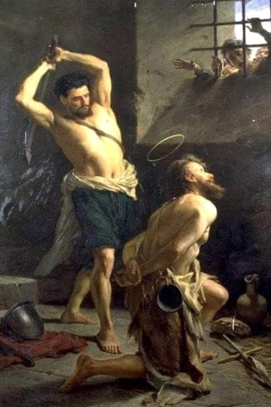

Leitura Orante
Leituras do Dia
17ª Semana do Tempo Comum
Santo Afonso Maria de Ligório
(bispo, doutor e fundador)
(Branca - ofício da memória)
1 de agosto de 2020
Leitura Orante do Evangelho
Ouça o áudio da oração e reflexão do padre Francisco das Chagas


Oração do dia
Ó Deus, que suscitais continuamente em vossa Igreja novos exemplos de virtude, dai-nos seguir de tal modo os
passos do bispo Santo Afonso Maria, no zelo pela salvação de todos, que alcancemos com ele a recompensa
celeste. Por Nosso Senhor Jesus Cristo, Vosso Filho, na Unidade do Espírito Santo.
Primeira Leitura: Jr 26,11-16.24)
Naqueles dias: 11Os sacerdotes e profetas dirigiram-se aos chefes e a todo o povo, dizendo: 'Este homem foi julgado réu de morte, porque profetizou contra esta cidade, como ouvistes com vossos ouvidos'. 12Disse Jeremias aos dignitários e a todo o povo: ' Senhor incumbiu-me de profetizar para esta casa e para esta cidade através de todas as palavras que ouvistes.13Agora, portanto, tratai de emendar a vossa vida e as obras, ouvi a voz do Senhor, vosso Deus, que ele voltará atrás da decisão que tomou contra vós. 14Eu estou aqui, em vossas mãos, fazei de mim o que vos parecer conveniente e justo, 15mas ficai sabendo que, se me derdes a morte, tereis derramado sangue inocente contra vós mesmos e contra esta cidade e seus habitantes, pois em verdade o Senhor enviou-me a vós para falar tudo isso a vossos ouvidos.' 16Os chefes e o povo em geral disseram aos sacerdotes e profetas: 'Este homem não merece ser condenado à morte; ele falou-nos em nome do Senhor, nosso Deus.' 24Jeremias passou a ter proteção de Aicam, filho de Safã, para não cair nas mãos do povo e evitar ser morto. – Palavra do Senhor.
Salmo Responsorial - Sl 68,15-16. 30-31. 33-34 (R. Cf. 14)
No tempo favorável, escutai-me, ó Senhor!
!
15Retirai-me deste lodo, pois me afundo! Libertai-me, ó Senhor, dos que me odeiam, e salvai-me destas águas tão profundas! 16Que as águas turbulentas não me arrastem, não me devorem violentos turbilhões, nem a cova feche a boca sobre mim!
No tempo favorável, escutai-me, ó Senhor! !
30Pobre de mim, sou infeliz e sofredor! Que vosso auxílio me levante, Senhor Deus! 31Cantando eu louvarei o vosso nome e agradecido exultarei de alegria!
No tempo favorável, escutai-me, ó Senhor! !
33Humildes, vede isto e alegrai-vos: o vosso coração reviverá, se procurardes o Senhor continuamente! 34Pois nosso Deus atende à prece dos seus pobres, e não despreza o clamor de seus cativos.
No tempo favorável, escutai-me, ó Senhor! !Evangelho: Mt 14,1-12
1Naquele tempo, a fama de Jesus chegou aos ouvidos do governador Herodes. 2Ele disse a seus servidores: 'É João Batista, que ressuscitou dos mortos; e, por isso, os poderes miraculosos atuam nele.' 3De fato, Herodes tinha mandado prender João, amarrá-lo e colocá-lo na prisão, por causa de Herodíades, a mulher de seu irmão Filipe. 4Pois João tinha dito a Herodes: 'Não te é permitido tê-la como esposa.' 5Herodes queria matar João, mas tinha medo do povo, que o considerava como profeta. 6Por ocasião do aniversário de Herodes, a filha de Herodíades dançou diante de todos, e agradou tanto a Herodes 7que ele prometeu, com juramento, dar a ela tudo o que pedisse. 8Instigada pela mãe, ela disse: 'Dá-me aqui, num prato, a cabeça de João Batista.' 90 rei ficou triste, mas, por causa do juramento diante dos convidados, ordenou que atendessem o pedido dela. 10E mandou cortar a cabeça de João, no cárcere. 11Depois a cabeça foi trazida num prato, entregue à moça e esta a levou para a sua mãe. 120s discípulos de João foram buscar o corpo e o enterraram. Depois foram contar tudo a Jesus. - Palavra da Salvação.
Leituras do mês
TAGS
missao Amazonia evengel covid-19 indigenas novica papa francisco
Destaques
Província Stella Matutina
Rua São Benedito, 2146 - Santo Amaro - São Paulo - SP |
Tel. (11)
5547-7222


Província Spiritus Divinae Sapientiae
Rua Arnaldo Janssen, 320 - Cara-Cara - Ponta Grossa - PR |
Tel. (42) 3326 4091